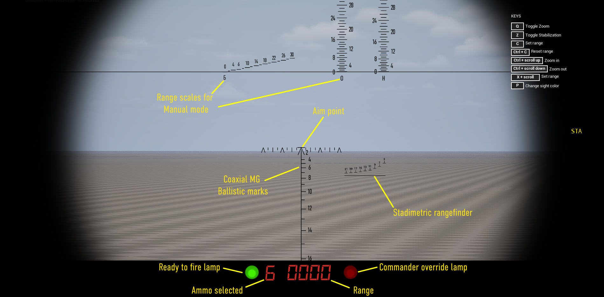

T-64BV is available in 3 faction in the SuperMod, Ukrainian Ground Forces 2020, Ukrainian Forces 2024 and in the African Union. The T-64BV comes with the 1G42 gunner sight and 1A33 FCS.
This sight have multiple features :
* Laser Range finder
* Auto-Zeroing
* Pancratic/continuous zoom
* backup manual mode
Б - APFSDS К - HEAT О - High Explosive У - Gun-Launched Anti-Tank Guided Missile